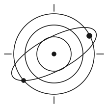
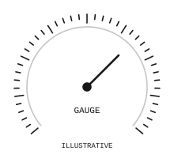
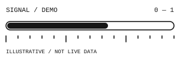
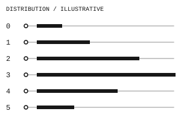
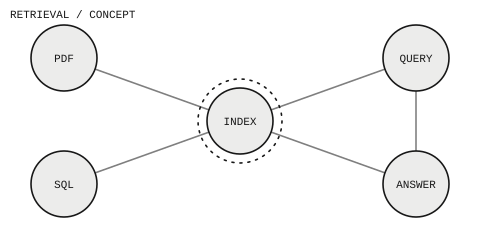
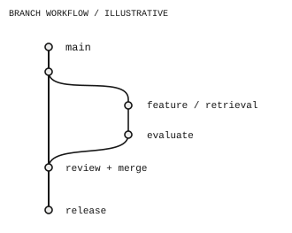
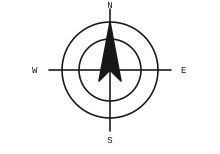

FIG. 01 / MARKERS

FIG. 02 / CIRCLES

Orbital circles
SVG ↗
FIG. 03 / GRIDS
Dot grid
SVG ↗
FIG. 04 / GRIDS
Binary circle matrix
SVG ↗
FIG. 05 / CIRCLES
Wireframe globe
SVG ↗
FIG. 06 / GAUGES

Radial gauge
SVG ↗
FIG. 07 / GAUGES

Linear signal gauge
SVG ↗
FIG. 08 / SCALES
Measurement ruler
SVG ↗
FIG. 09 / GAUGES

Distribution bars
SVG ↗
FIG. 10 / PATTERNS
Technical stripe
SVG ↗
FIG. 11 / MARKERS
Corner frame
SVG ↗
FIG. 12 / LABELS
Output label
SVG ↗
FIG. 13 / DIAGRAMS
AI agent workflow
SVG ↗
FIG. 14 / DIAGRAMS

Retrieval network
SVG ↗
FIG. 15 / DIAGRAMS

Branch workflow
SVG ↗
FIG. 16 / CIRCLES
AI circuit orbit
SVG ↗
FIG. 17 / CIRCLES
